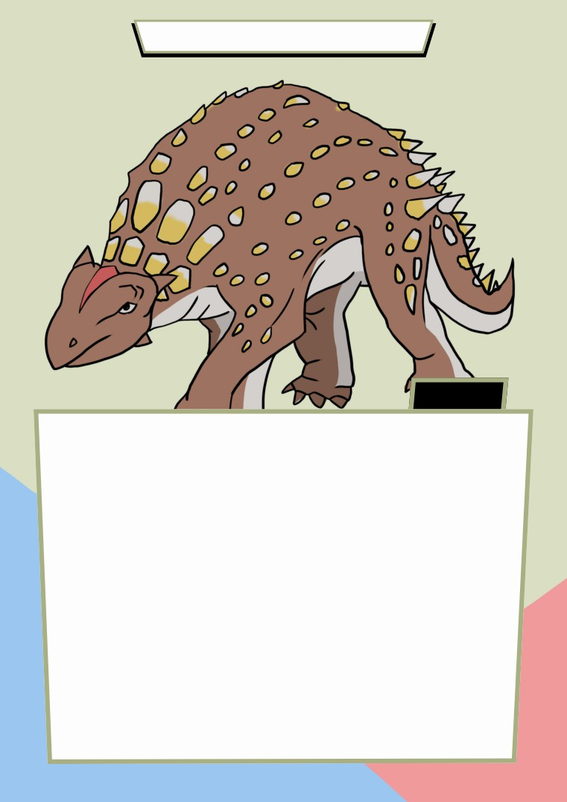

MINMI PARAVERTEBRA
FACT
Minmi paravertebra is a small armoured dinosaur (ankylosaur) which would
have been about size of a yearling cow. Minmi is named after the place near
where the first pieces of it were discovered in the 1960s, Minmi Crossing.A
nearly complete skeleton of Minmi was found in north-west Queensland in
1990. Minmi had armoured skin with large scutes, like a crocodile and smaller
pea-sized bones imbedded all over. Minmi lived between 110 and 100 million
years ago, during the Early Cretaceous period. It was a herbivore, and the
a
r
moured skin protected it from predators.
I
NTERESTINGFACTS: Minmi was about 6½ feet (2 meters) long, and stood
about 3 feet (1 meter) tall at the shoulder. Its body, head and tail were protected
by a variety of types of bony armor. Its hind legs were longer than its front
l
i
mbs, and from fossilized tracks, scientists believe that Minmi was relatively
slow moving.